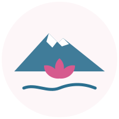
Ruka RayünCabañas · CoñaripeRuka Rayün casa de flores, en mapudungun
Cabañas de 2 y 3 dormitorios a orillas del lago Calafquén y el río Pellaifa, con acceso directo al agua y vista al volcán Villarrica.
El agua
Ruka Rayün está donde el río Pellaifa llega al Calafquén: bajar a bañarse, remar o pescar es parte del día.
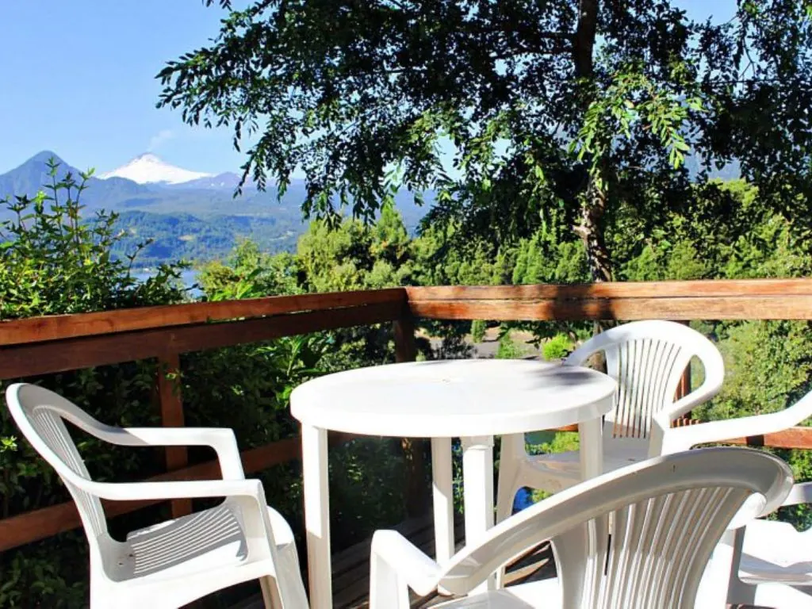
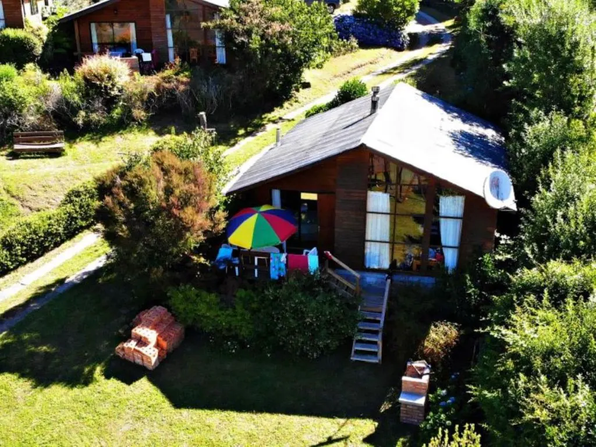
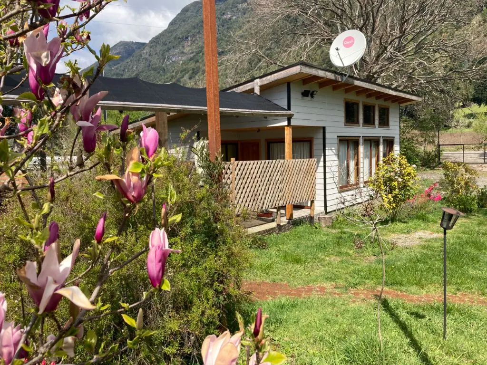
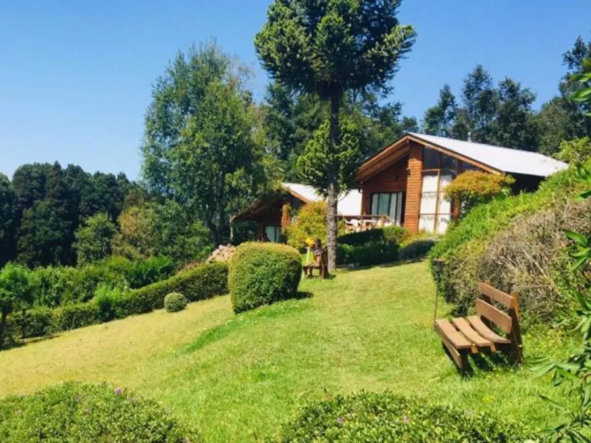
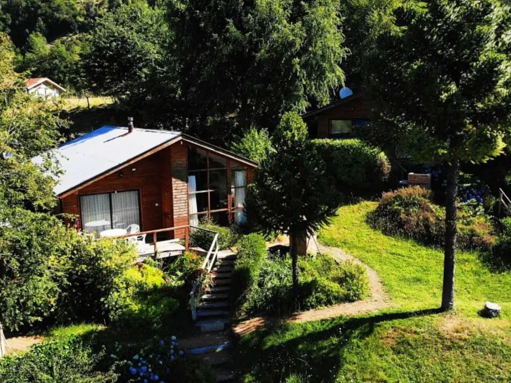
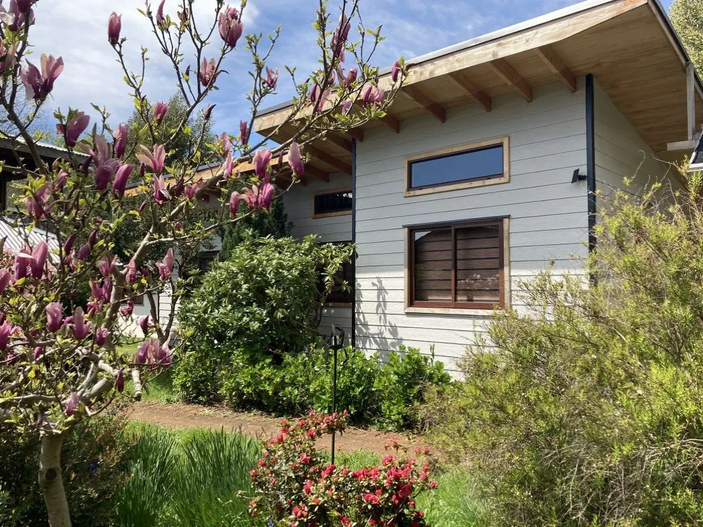
El jardín
Magnolios, hortensias y pasto bien cuidado: el nombre no es casualidad. En primavera el jardín se llena de color y los niños tienen juegos para todo el día.
Las cabañas
Opciones de 2 o 3 dormitorios, totalmente equipadas, con calefacción a combustión lenta y terraza con parrilla propia.
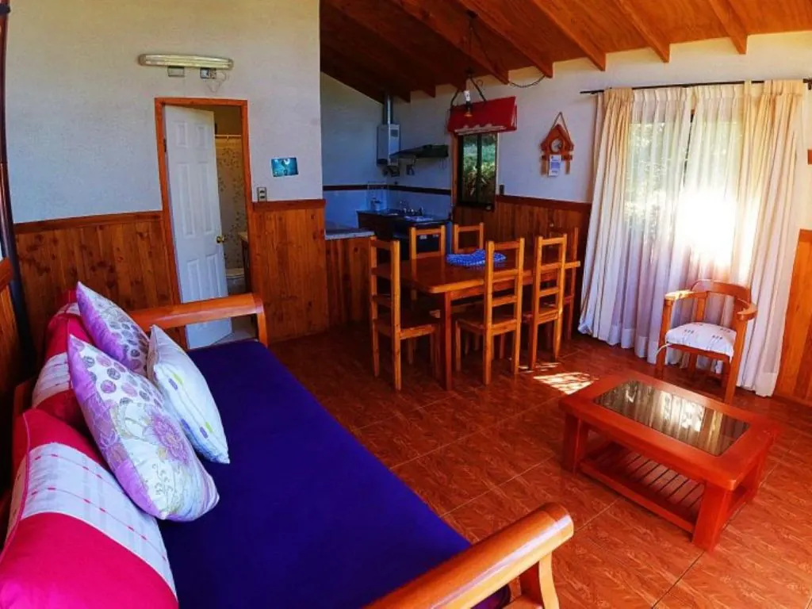
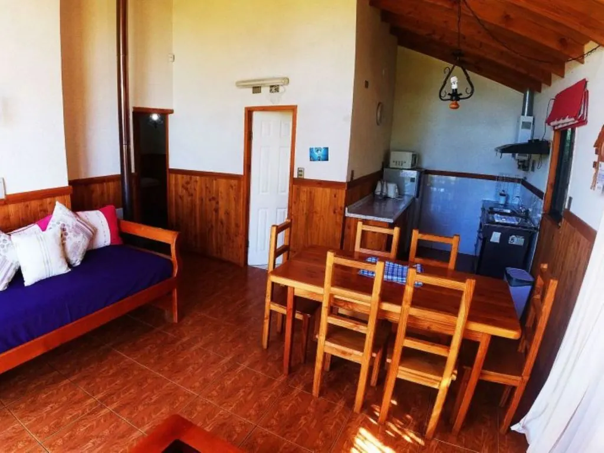
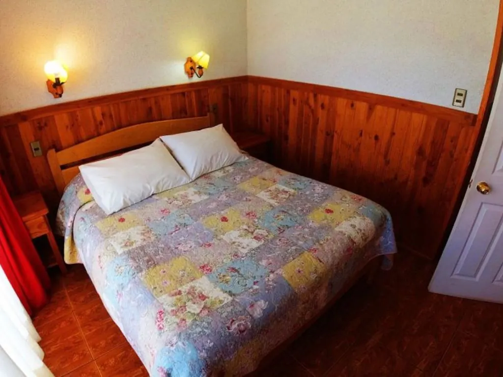
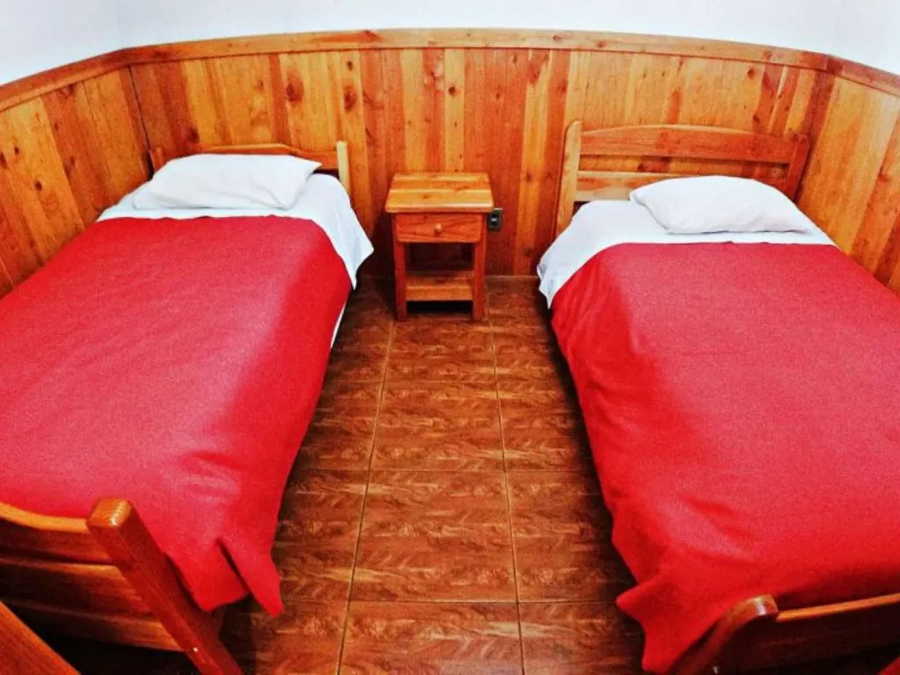
“Es espectacular la vista, el lugar es súper cómodo y muy bien equipadas las cabañas.”
Braulio B.“Hermosa vista, con ingreso al río y lago.”
CamiReserve directo con nosotros: mejor tarifa, sin comisiones y respuesta personal por WhatsApp.
Escribir por WhatsAppBoceto preparado con las fotos y opiniones públicas de Cabañas Ruka Rayün. En el sitio final van sus fotos, textos y tarifas actualizadas.
Propuesta de Red Vaeru para Ruka Rayün
Garantía de portada: primero ven su portada terminada. Si no les convence, no pagan nada. Si les gusta, firmamos contrato y pagan el 50% para comenzar.
Hablar con Jorge por WhatsApp Ver el portafolio de Red Vaeru ↗